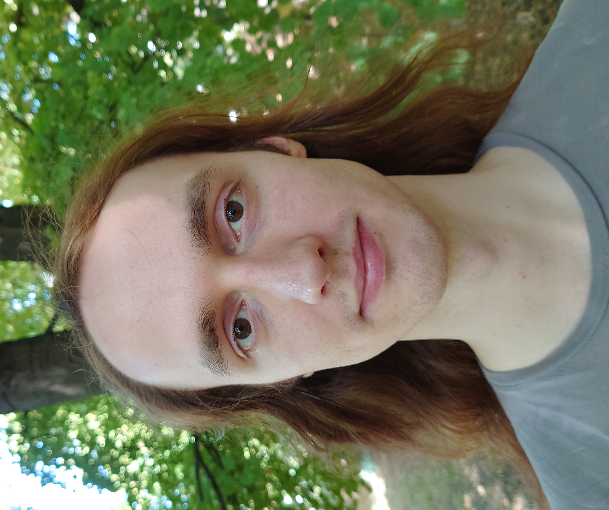

<html>
<head>
<title>
Mischa Elkner
</title>
</head>
</html>



<body>
<h1> Mischa Elkner </h1>

<p>Welcome to my website! I am a second year PhD student in the <a href =  https://hausel.pages.ist.ac.at/>Hausel Group</a> at the Institute of Science an Technology Austria.</p>

<p>Before starting my PhD, I studied mathematics at the University of Vienna. There, my BSc thesis was supervised by <a href = https://www.mat.univie.ac.at/~cap/>Andreas Cap</a> and my MSc thesis by <a href = https://shantanudave.com/math-a11y/>Shantanu Dave</a>.</p>

<p>I am interested in Lie theory and its interplay with algebraic and differential geometry. My PhD project is in geometric representation theory, with a focus on natural representation-theoretic symmetries. Using the recently introduced <a href = https://arxiv.org/abs/2311.02711>big algebras</a>, I am trying to study such symmetries geometrically.</p>

<h2> Research </h2>
<li> <em><a href="Draft__On_involutions_of_minuscule_Kirillov_algebras_induced_by_real_structures.pdf">On involutions of minuscule Kirillov algebras induced by real structures</a></em> (2024, preprint) </li>
<li> My <a href = "MSc thesis.pdf"> master's thesis </a> was in noncommutative geometry in the sense of Alain Connes. I filled in details for the computation of cyclic cohomology for noncommutative tori, following Ryszard Nest. </li> 


</body>
